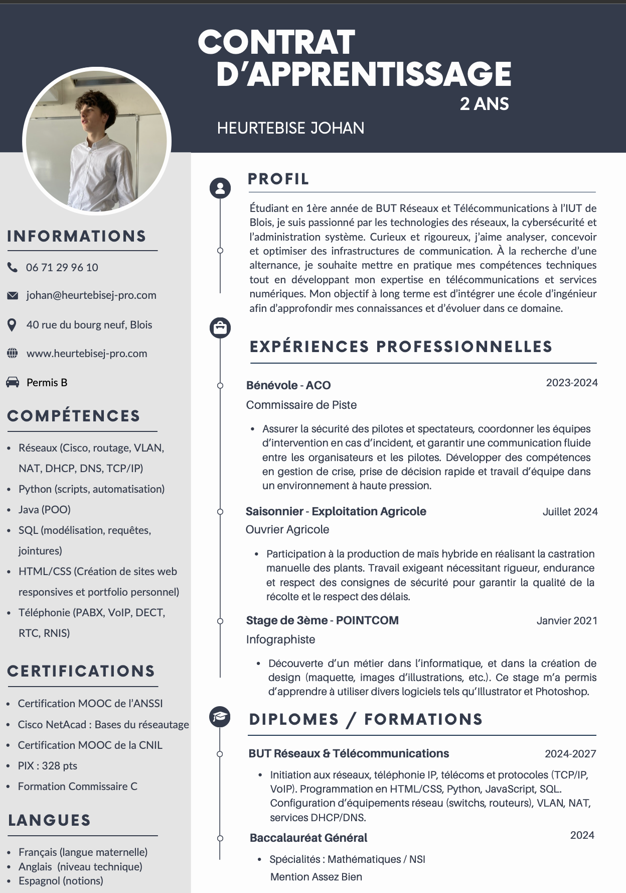
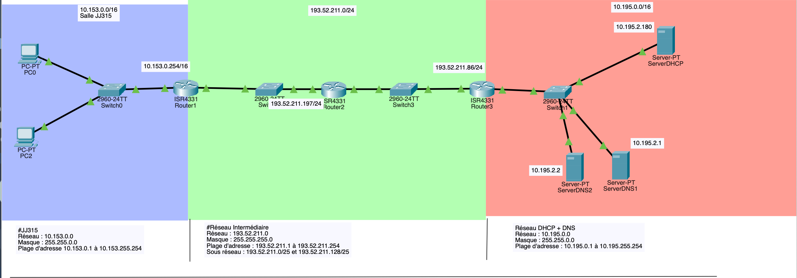
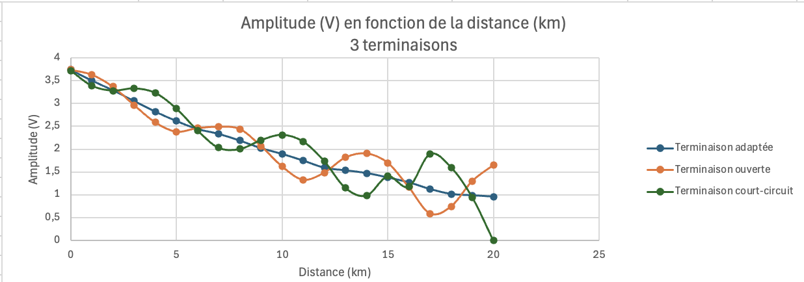
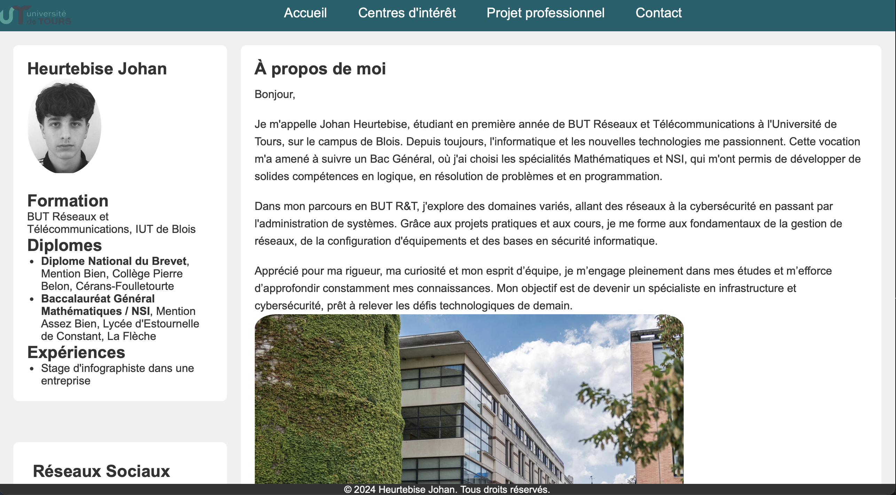
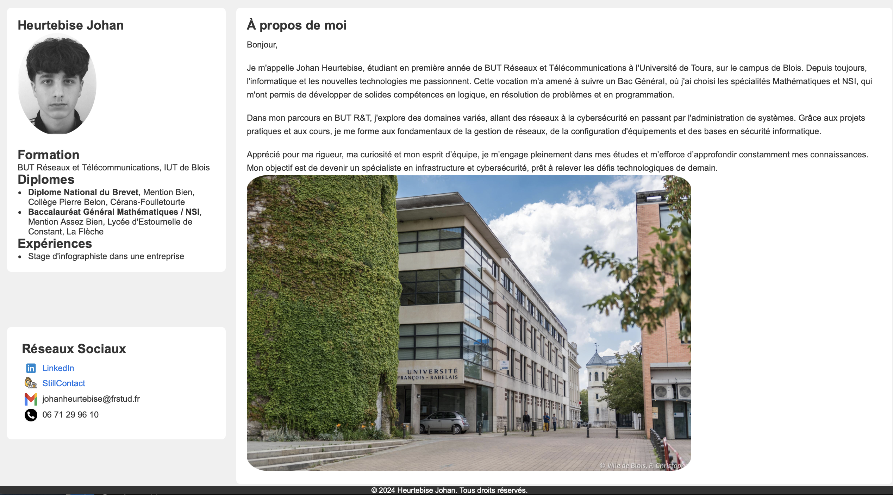
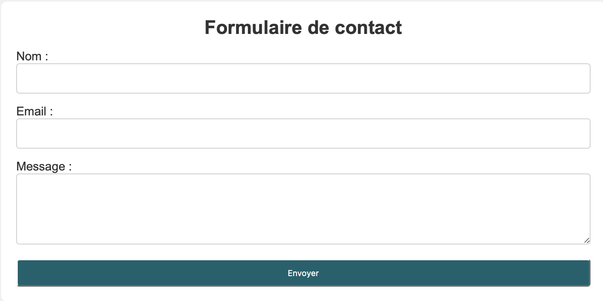
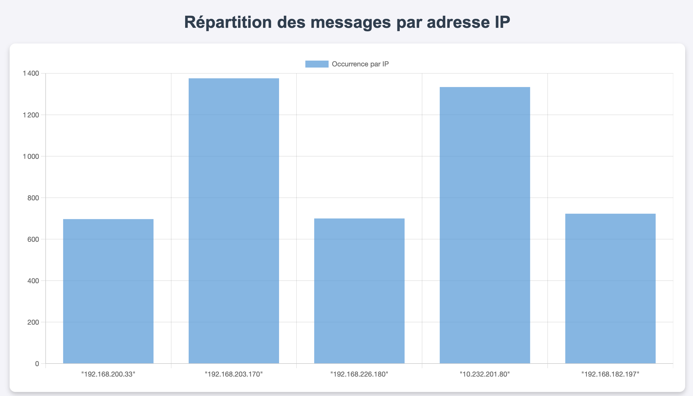

Dans un premier temps, nous avons suivi la certification MOOC de l’ANSSI, qui nous a permis de comprendre les enjeux globaux de la cybersécurité. L'ANSSI (Agence Nationale de la Sécurité des Systèmes d'Information) fournit des formations essentielles pour maîtriser les bases de la sécurité des informations, de la gestion des incidents et de la protection des données.
À propos
Passionné par les réseaux et les nouvelles technologies, je suis toujours en quête d'innovation et d'amélioration continue.
Je cherche constamment à améliorer mes compétences et à relever de nouveaux défis dans le domaine des réseaux et des télécommunications.
📄 Télécharger mon CVActualités
📢 Recherche d'alternance - 2025-2027
Pourquoi je suis un bon candidat ?
Spécialisé en réseaux et télécommunications, je suis motivé à intégrer une entreprise innovante, où je pourrai mettre mes compétences au service de projets concrets et enrichir mon expertise avec de nouvelles technologies.
Disponibilité : Dès septembre 2025
Lieux : Pays de la Loire, Centre-val de Loire
Poste recherché : Alternance en réseaux et télécommunications
Portfolio

Projet SAE101 : Sensibilisation à l'hygiène informatique
Dans le cadre de notre projet en S1 de BUT R&T, nous avons abordé les fondamentaux de l’hygiène informatique, la sécurité des données et les bonnes pratiques à adopter sur Internet...
Compétences ciblées : Administrer les réseaux et l’Internet
Mots clefs : Sécurité numérique, Utilisation d’Internet, Menaces communes, Remédiations.
📥 PowerPoint

Compétences ciblées : Administrer les réseaux et l’Internet, Configurer et sécuriser des réseaux informatiques
Mots clés : Réseau local, Routage, Commutation, Adresse IP, Cisco Packet Tracer
📥 Fichier Cisco
Projet SAE102 : S’initier aux réseaux informatiques
Dans le cadre de notre projet en S1 de BUT R&T, nous avons modélisé des réseaux à l’aide du simulateur Cisco Packet Tracer. Cette activité m’a permis de mieux comprendre l’architecture des réseaux et de renforcer mes compétences en simulation, configuration et communication technique.
Compétences ciblées : Administrer les réseaux et l’Internet, Configurer et sécuriser des réseaux informatiques
Mots clés : Réseau local, Routage, Commutation, Adresse IP, Cisco Packet Tracer
📥 Fichier Cisco

Projet SAE103 : Caractérisation des supports de transmission
Dans le cadre de la SAE103, nous avons étudié différents supports de transmission (cuivre, fibre optique, hertzien), réalisé des mesures techniques et appris à analyser et présenter ces résultats dans un contexte professionnel.
Compétences ciblées : Connecter les entreprises et les usagers
Mots clés : Mesures, Supports de transmission, Fibre optique, Cuivre, Radio
📥 Rapport complet
Étude des supports de transmission
Ce projet faisait partie de la SAÉ 1.03 : “Découvrir un dispositif de transmission”, visant à étudier les performances des différents supports de transmission, tels que le cuivre (RJ45), en mesurant des paramètres de signal et en analysant les résultats obtenus.
1. Découverte du système de transmission RJ45
Nous avons d'abord étudié la transmission de données à travers des câbles RJ45 de différentes longueurs : 10m, 20m, et 30m. L’objectif était de mesurer l’impact de la distance sur la qualité du signal. Grâce à l’utilisation d’un oscilloscope, nous avons observé plusieurs paramètres :
- ⤵️ Atténuation (dB) : mesure de la perte de signal causée par la longueur du câble.
- ⏱️ Temps de vol (retard) : mesure du temps que met le signal à parcourir le câble.
- 📏 Longueur d'onde : caractérisation des variations du signal à travers le câble.
Les résultats ont été rassemblés dans des feuilles Excel, et nous avons développé un petit outil permettant de calculer la tension de sortie et le temps de vol en fonction de la longueur du câble et de la tension initiale. Cela nous a permis de mieux comprendre comment la longueur du câble influence la transmission et de maîtriser les effets de la distance sur le signal.
Mesure de transmission à l'oscilloscope avec un câble RJ45 de 20 mètres. On observe l’atténuation du signal au fur et à mesure de la distance, ce qui permet de visualiser la perte de signal en fonction de la longueur du câble.
Les données de ces mesures ont été analysées pour déterminer les effets de la distance sur l'atténuation et le temps de vol. Cette analyse nous a permis de mieux comprendre comment la transmission évolue en fonction de la longueur du câble.
2. Simulation d’un câble de 20 km avec une plaquette
La deuxième phase du projet a consisté à utiliser une plaquette de simulation pour simuler un câble longue distance jusqu’à 20 km. Nous avons effectué les mêmes mesures et comparé les résultats obtenus pour trois types de terminaisons :
- 🔌 Terminaison adaptée : lorsque l’impédance du câble est correctement appariée à celle de la terminaison.
- 🔓 Terminaison ouverte : l’impédance n’est pas adaptée, ce qui crée des réflexions du signal.
- 🚫 Terminaison court-circuitée : également une impédance mal adaptée, engendrant des réflexions.
En observant les signaux à l’oscilloscope, nous avons pu étudier les signaux incident, réfléchi et confondu, et ainsi identifier les différences de comportement en fonction des configurations de terminaison.
Les résultats ont été exploités pour comparer les configurations et observer les effets de chaque terminaison sur la qualité du signal et l’amplitude du signal mesuré à l'oscilloscope.
Conclusion des observations de terminaisons
Les résultats ont montré que la terminaison adaptée est la plus stable, avec une amplitude régulière et une faible atténuation sur toute la distance. En revanche, les configurations avec terminaison ouverte et court-circuitée ont produit des oscillations et une perte de stabilité, ce qui diminue la qualité de la transmission.
Résultats et comparaison des configurations
En conclusion, les observations nous ont permis de confirmer que la terminaison adaptée est idéale pour une transmission stable, car elle minimise les réflexions et les pertes. Les configurations ouvertes et court-circuitées engendrent des réflexions qui perturbent la transmission et affectent la qualité du signal, rendant ces solutions moins efficaces sur de longues distances.

Les courbes illustrent les différentes configurations de terminaison et leurs effets sur l’amplitude du signal à l’oscilloscope. L'analyse montre clairement la stabilité de la terminaison adaptée par rapport aux autres configurations.
Ce projet m’a permis de renforcer mes compétences en mesures électroniques, en analyse de signal, et en présentation technique des résultats. Ces compétences sont fondamentales pour comprendre la performance des supports de transmission dans les réseaux de télécommunications.

Compétence ciblée : Créer des outils et applications informatiques pour les R&T
Mots clés : Identité numérique, Site personnel, HTML/CSS, Liens internes/externe, Grille, Wrapper
📥 Code source du site
Projet SAE104 : Se présenter sur Internet
Dans le cadre de la SAE104, j’ai conçu et développé un site Web personnel en HTML et CSS permettant de valoriser mon profil professionnel tout en respectant les bonnes pratiques liées à l’identité numérique.
Compétence ciblée : Créer des outils et applications informatiques pour les R&T
Mots clés : Identité numérique, Site personnel, HTML/CSS, Liens internes/externe, Grille, Wrapper
📥 Code source du site
Création d’un site Web personnel
Ce projet entrait dans le cadre de la SAÉ 1.04 : “Se présenter sur Internet”, qui visait à développer une présence en ligne maîtrisée pour un futur professionnel des réseaux et télécommunications. L’objectif était double : valoriser ses compétences et expériences tout en maîtrisant les enjeux de l’e-réputation.
1. Conception et structure du site
Le site a été entièrement réalisé en HTML et CSS. Il est composé de plusieurs pages liées entre elles par des liens internes (menu de navigation) et des liens externes (vers LinkedIn, GitHub, ou d'autres ressources professionnelles).
- 🧭 Navigation fluide : menu fixe en haut avec liens internes pour faciliter la consultation.
- 🖼️ Grille CSS : organisation responsive du contenu grâce à des grilles CSS.
- 📦 Wrapper : conteneur centralisé pour harmoniser l’affichage sur différents écrans.
- 🌐 Pages bilingues : certaines sections rédigées en anglais pour une ouverture à l’international.

Page d’accueil du site Web, mettant en avant une présentation claire, une photo, et une brève description professionnelle.
2. Contenu personnalisé et identité numérique
Le contenu du site a été rédigé de manière à respecter les règles de l’identité numérique professionnelle, en veillant à :
- 🔐 Séparer vie privée et vie professionnelle.
- 💼 Présenter ses expériences et projets réalisés pendant la formation.
- 🔗 Créer une cohérence entre les différentes plateformes (site, LinkedIn, etc.).
Les pages incluent une présentation de mon parcours, un mini-CV, une galerie de projets et une page de contact. L’usage des balises HTML sémantiques a permis une structure claire et accessible.

3. Compétences mobilisées
Ce projet m’a permis de mobiliser et développer plusieurs compétences clés :
- 💻 Développement Web statique : HTML5, CSS3, responsive design.
- 🎯 Structuration de contenu : usage logique des titres, paragraphes, sections, navigation.
- 🧠 Réflexion sur l’identité numérique : choix des informations, cohérence entre pages.
- 🧩 Utilisation d’une grille CSS : mise en page professionnelle.

Formulaire de contact avec validation de champ, permettant de simuler une interaction professionnelle via le site.
Conclusion
Ce projet m’a permis de prendre conscience de l’importance de l’image professionnelle en ligne et de la maîtrise des technologies Web de base pour créer un support de présentation pertinent. Le site est un outil réutilisable que je peux faire évoluer tout au long de mon parcours.

Compétence ciblée : Créer des outils et applications informatiques pour les R&T
Mots clés : Python, Analyse de logs, Traitement de données, HTML dynamique, Chart.js
📥 Code source du projet
Projet SAE105 : Traiter des données
Dans le cadre de la SAÉ 1.05, nous avons réalisé un projet visant à concevoir un programme complet en Python capable de lire un fichier de logs (issus d’un service de messagerie), d’en extraire les informations les plus pertinentes, puis de générer une page HTML dynamique présentant ces résultats sous forme de graphiques interactifs.
Compétence ciblée : Créer des outils et applications informatiques pour les R&T
Mots clés : Python, Analyse de logs, Traitement de données, HTML dynamique, Chart.js
📥 Code source du projet
Compétences

HTML
Création d’un site Web personnel.
Niveau : Intermédiaire
CSS
Ajout de style sur un site Web personnel, avec responsive design.
Niveau : Intermédiaire
Bash
Découverte de l'environnement Linux, script / commandes simples.
Niveau : Débutant
Python
Création de plusieurs algorithmes, d’un niveau modeste à intermédiaire.
Niveau : Intermédiaire confirmé
Java
Initiation à la POO en Java.
Niveau : Débutant
SQL
Conception de tables avancées et création de requêtes complexes.
Niveau : Intermédiaire
Architecture des Réseaux
Initiation aux Réseaux Informatiques, structure et équipements.
Niveau : Débutant
Télécommunications
Initiation aux Télécommunications, à la Téléphonie d'entreprise.
Niveau : Débutant
Cybersécurité - Hygiène Informatique
Initiation à la cybersécurité et aux bonnes pratiques en ligne.
Niveau : DébutantExpériences Professionnelles / Formation suivies
Étudiant en BUT R&T à l'IUT de Blois
2024-2027
Développement de mes compétences techniques en réseaux, cybersécurité, et systèmes de communication, avec une forte volonté de contribuer à l'innovation dans ce domaine.
Compétences techniques : Développement Web, Configuration de réseaux, Analyse de systèmes de transmission, etc.
Expérience d'Ouvrier Agricole
Juillet 2024
Participation à la production de maïs en réalisant la castration manuelle des plants. Travail exigeant nécessitant rigueur et respect des consignes de sécurité.
Compétences acquises : Autonomie, Rigueur, Respect des délais, etc.
Lycéen au Lycée Polyvalent d'Estournelle de Constant
2021-2024
Baccalauréat général en 3 ans, avec les spécialités Mathématiques et NSI.
Compétences acquises : Rigueur, Autonomie.
Stage d'observation de 3ème - Infographiste
Janvier 2021
Découverte du métier d'infographiste et de la création de designs (maquettes, images d'illustration, etc.). Ce stage m'a permis d'apprendre à utiliser divers logiciels tels qu'Illustrator et Photoshop.
Compétences acquises : Utilisation de logiciels Adobe, Conception de maquettes, etc.
Contact
Pour me contacter, envoyez-moi un e-mail à : johan@heurtebisej-pro.com
Ou remplissez ce formulaire :